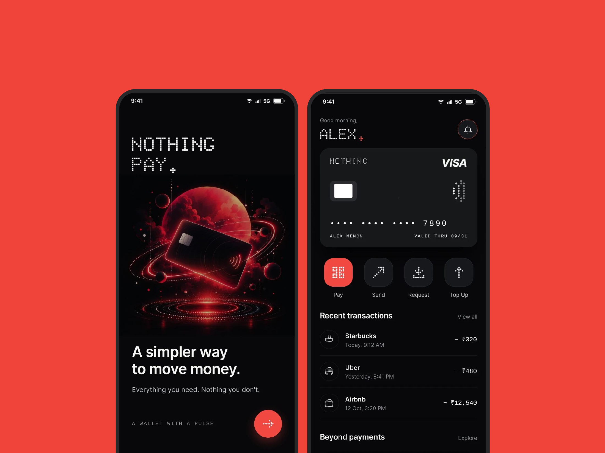
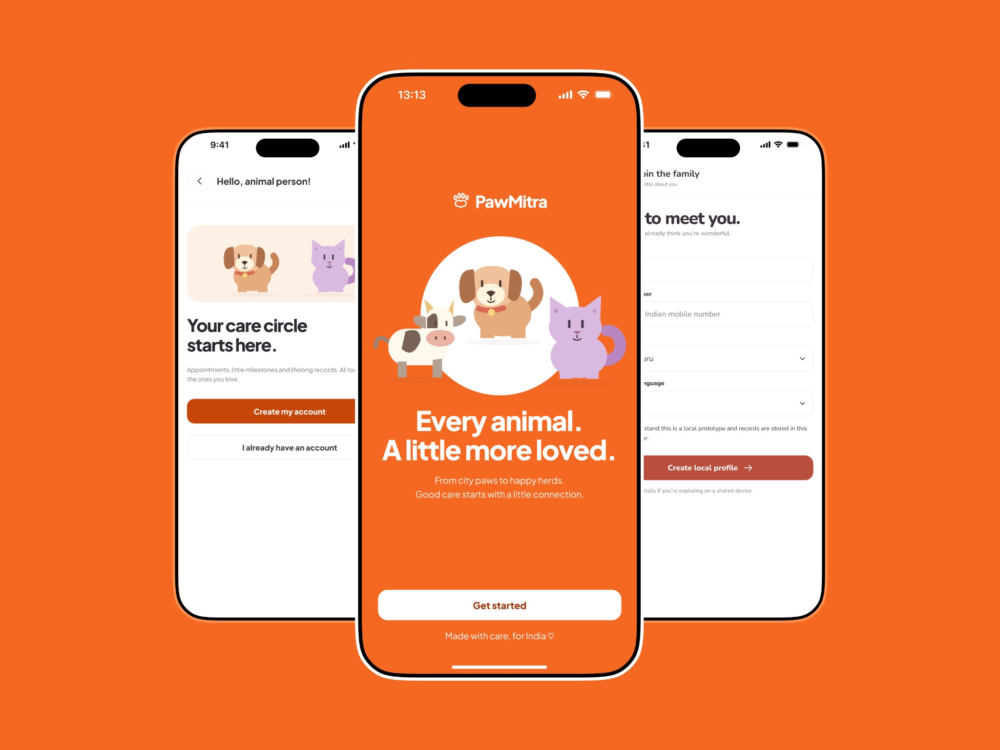
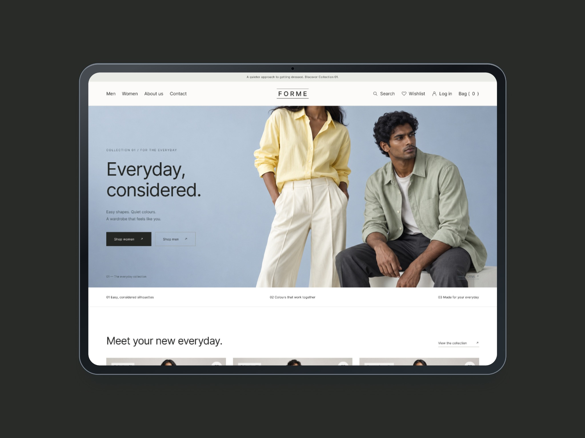
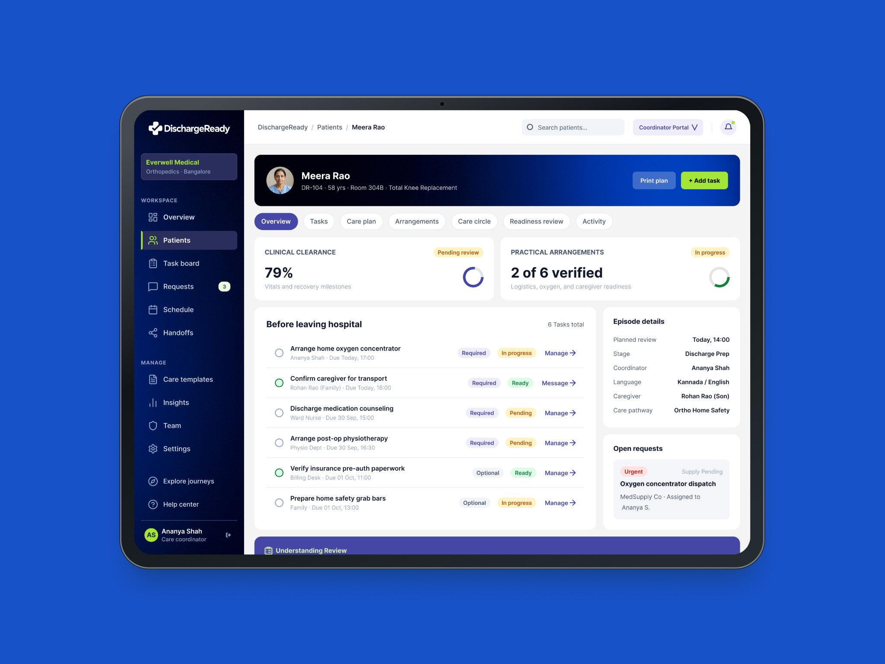
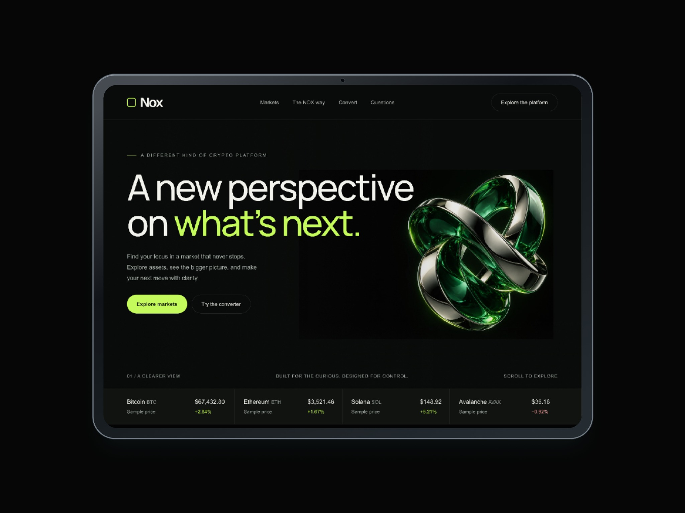

UX/UI design studio
Digital experiences.
Designed with
purpose.
Considered strategy. Clear interfaces. Cohesive experiences.Websites / Apps / Digital products
Your business has a direction.
Your digital experience should make it clear.
We look at what your business needs to achieve and what people need to do. From there, we shape the structure, journeys and visual language into an experience that feels simple to use and right for your brand.
Explore Our CapabilitiesBuilt on trustGood work creates
Good work creates
lasting confidence.
A considered approach, from the first brief to the final handoff.
Experience, put into practice
Projects delivered
Across websites, apps and digital products.
Relationships that matter
Happy clients
Because the way we work matters, too.
Experience With Perspective
Years of Experience
Bringing perspective to every design decision.
A Direct Working Relationship
Founder-Led Collaboration
Work directly with the person shaping your project.
Selected work
Design in practice.
A selection of websites, apps and product experiences across different industries.
Showing All 5 Projects



SaaS Product Design
DischargeReady
Bringing clarity to complex healthcare workflows.
SaaSProduct Design

01 / 05Scroll to Explore
Our CapabilitiesThoughtful solutions.
Thoughtful solutions.
Built around your business.
Strategy, experience and visual design, brought together with purpose.
Website Design
 View Service
View Service Services Included
Clear, responsive websites that communicate your value and help people find what they need.
Discuss Website DesignApp & Product Design
 View Service
View Service Services Included
Intuitive digital products built around the tasks, decisions and journeys that matter.
Discuss App & Product DesignUX Research & Strategy
 View Service
View Service Services Included
A clearer understanding of your audience, the problem and the opportunities to improve.
Discuss UX Research & StrategyDesign Systems
 View Service
View Service Services Included
Consistent foundations and reusable components that keep your product coherent as it grows.
Discuss Design SystemsFree UX auditNot sure what needs
Not sure what needs
to work better?
Let’s take a look.
Get a fresh perspective on one key page or flow. We’ll look for usability friction, unclear content and opportunities to make the next step easier.
- A focused review of one page or flow
- Key friction points and practical recommendations
- A useful starting point for your next design decision
MAVOCADO / UX REVIEW
A clearer path
to the next step.
ILLUSTRATIVE REVIEW PREVIEWto the next step.
Make the primary action easier to find.
Navigation & hierarchyReview
Content & clarityReview
Calls to actionReview
A useful second perspective.
Our Design ApproachClarity at every stage.
Clarity at every stage.
Care in every decision.
Four connected stages that turn the right questions into an experience ready for the real world.
Discover & Define

Clarity Before
Creativity.
We align on your business goals, listen to your audience and examine the current experience. The outcome is a focused brief with clear priorities.
Research · Goals · Project BriefStructure & Explore

Journeys That
Make Sense.
We map the important journeys, organize the information and explore wireframes. You can review the logic before the visual details take shape.
Journeys · Architecture · WireframesDesign & Validate

Design With
Direction.
We develop the visual language, design the interface and connect it into a prototype. Feedback and usability checks guide each refinement.
Visual Design · Prototypes · ReviewDeliver & Support

Ready for
the Real World.
We prepare reusable components, responsive screens and implementation guidance. Then we work through design questions with your development team.
Design System · Handoff · Design QA
Meet the studioThoughtful design.
Thoughtful design.
Personal involvement.
Mavocado is a founder-led UX/UI design studio. We bring a business perspective to design, combining clear thinking with close attention to how people experience your product.
You work directly with the person shaping your project, from the initial conversation through to the final handoff.
Mahesh ShanbhagFounder & Chief of Fresh Thinking
More About Mavocado Before we begin
A few useful answers.
Can we start with an early idea?
Yes. A rough brief or a problem you want to solve is enough to start a conversation. We can work together to clarify the direction, priorities and scope.
Can you improve an existing website or app?
Yes. We can review the current experience, identify where people encounter friction and redesign the journeys and screens that need attention.
What does the design handoff include?
The agreed scope can include user flows, wireframes, interface designs, interactive prototypes, reusable components and development notes. We define the deliverables before work begins.
How do we agree on scope and timing?
We first discuss your goals, current stage and priorities. Then we prepare a proposal with the scope, deliverables and timeline for your review.